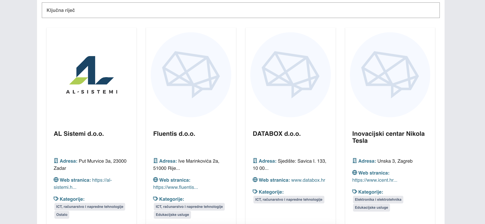
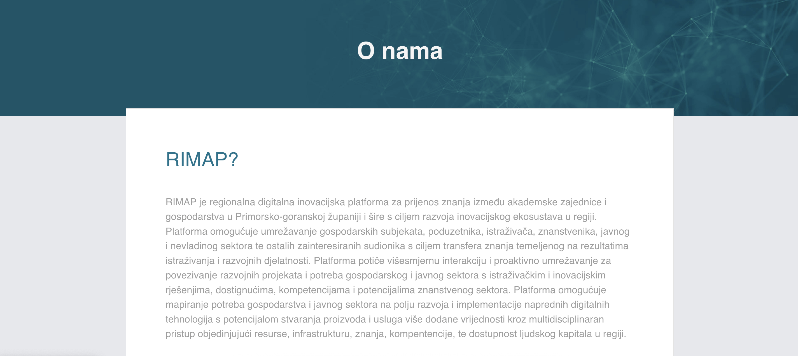
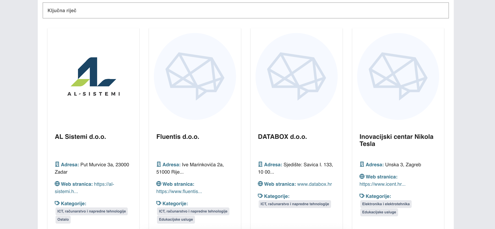
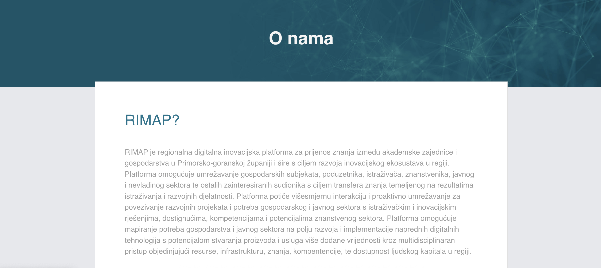

Rimap
Rimap is a regional digital innovation platform in Primorje–Gorski Kotar County focused on connecting academia, businesses, and public institutions. It supports knowledge transfer, joint research and development initiatives, and the adoption of digital technologies to strengthen the local innovation ecosystem and create high-value products and services.
Technologies
Challenge
Unify stakeholders from academia, industry, and the public sector in one place and make collaboration easy—while keeping the platform clear, credible, and simple to navigate.
Solution
Build a scalable, content-driven digital platform with a strong information architecture, consistent branding, and intuitive flows that support research collaboration, innovation programs, and structured knowledge transfer across the region.
Project Showcase
 



Key Features
Regional innovation hub
Centralized platform connecting businesses, academia, and public institutions in Primorje–Gorski Kotar County.
Knowledge transfer
Supports commercialization and practical application of academic expertise through structured content and digital tools.
Multidisciplinary collaboration
Enables cross-sector cooperation across R&D and digital technologies using regional resources and talent.
Clear information architecture
Simple navigation and organized content that make collaboration opportunities easy to find and understand.
Credibility-first content
Professional presentation that builds trust for partnerships, programs, and research initiatives.
Responsive experience
Optimized for desktop, tablet, and mobile devices.